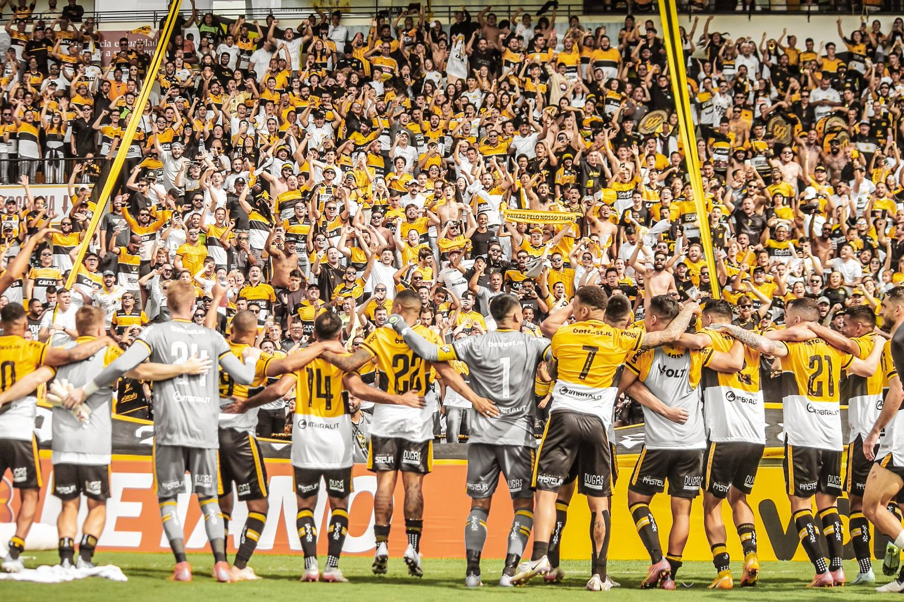

No dia seguinte após comemorar o seu aniversário de 75 anos, o Criciúma conquistou uma importante vitória pela 7ª rodada do Campeonato Brasileiro da Série B. O Tigre recebeu o CRB na manhã deste sábado (14/05) no estádio Heriberto Hülse, e com o apoio de quase dez mil torcedores, venceu o adversário pelo placar de 3 a 0. Os gols carvoeiros foram marcados por Tiago Alagoano, Rômulo e Hygor.
Com a vitória, a equipe comandada pelo técnico Cláudio Tencati soma 9 pontos na disputa da competição nacional. O próximo adversário do Tigre será o Grêmio. A partida será disputada na quinta-feira (19/05), às 19 horas, na Arena do Grêmio, em Porto Alegre (RS).
O Tigre fez uma boa partida e abriu o marcador aos 19 minutos com Thiago Alagoano após boa jogada pela direita de Claudinho e Fellipe Mateus. O camisa 10 chutou de primeira no canto direito da rede. Aos 28 minutos, o zagueiro Rodrigo avançou e bateu com força por cima da meta. Dez minutos depois, Léo Costa também arriscou e o goleiro espalmou para evitar o segundo. Na última boa oportunidade do primeiro tempo, Tiago Marques recebeu na área e tentou de voleio obrigando o goleiro do CRB a fazer boa defesa.
No segundo tempo, Rômulo, que havia entrado no lugar de Arilson aos 7 minutos, ampliou depois de 5 minutos em campo. Rafael Bilu fez boa jogada, finalizou forte e no rebote o volante do Tigre pegou bem na bola para fazer o segundo. Hygor, que substituiu Tiago Marques, teve boa chance no primeiro lance em campo, dividindo com a zaga dentro da área. A insistência do atacante deu certo e aos 30 minutos ele fez o terceiro. O Criciúma apertou a saída de bola do CRB e Lucas Xavier tocou para o camisa 18 fechar o placar. Nos minutos finais, Fellipe Mateus e Thiago Alagoano tiveram oportunidades de ampliar, mas esbarraram na defesa adversária.
